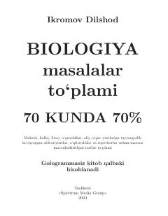

BMBiologiya fanidan masalalar va testlar yechish uchun amaliy qoʻllanma.
Mazkur qoʻllanma maktab, kollej, litsey oʻquvchilari hamda oliy oʻquv yurtlariga tayyorgarlik koʻrayotgan abituriyentlar uchun biologiya fanidan masalalar va testlarni oʻz ichiga oladi. Kitobda energiya almashinuvi, ATF sintezi va fotosintez kabi mavzular boʻyicha namuna va yechimlar batafsil keltirilgan. Oʻqituvchi va repetitorlar ham undan dars jarayonida foydalanishlari mumkin.